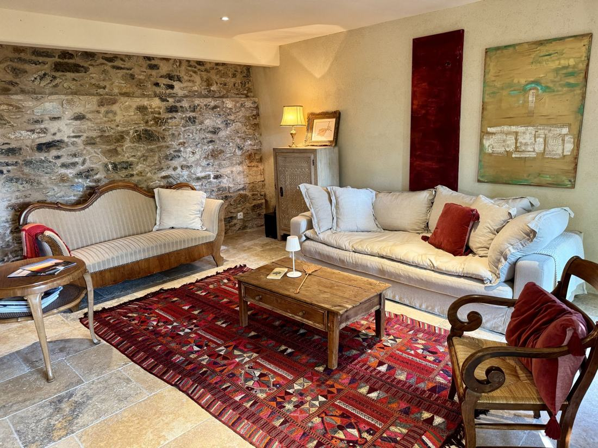
Erdgeschoss
Wohnzimmer
Gemütliche Sofas vor der alten Steinwand, dazu ein Beamer mit Filmen für die Abende.
Ein liebevoll eingerichtetes Steinhaus für vier, mit Garten, Pool und Blick über die Weinberge bis zum Meer.
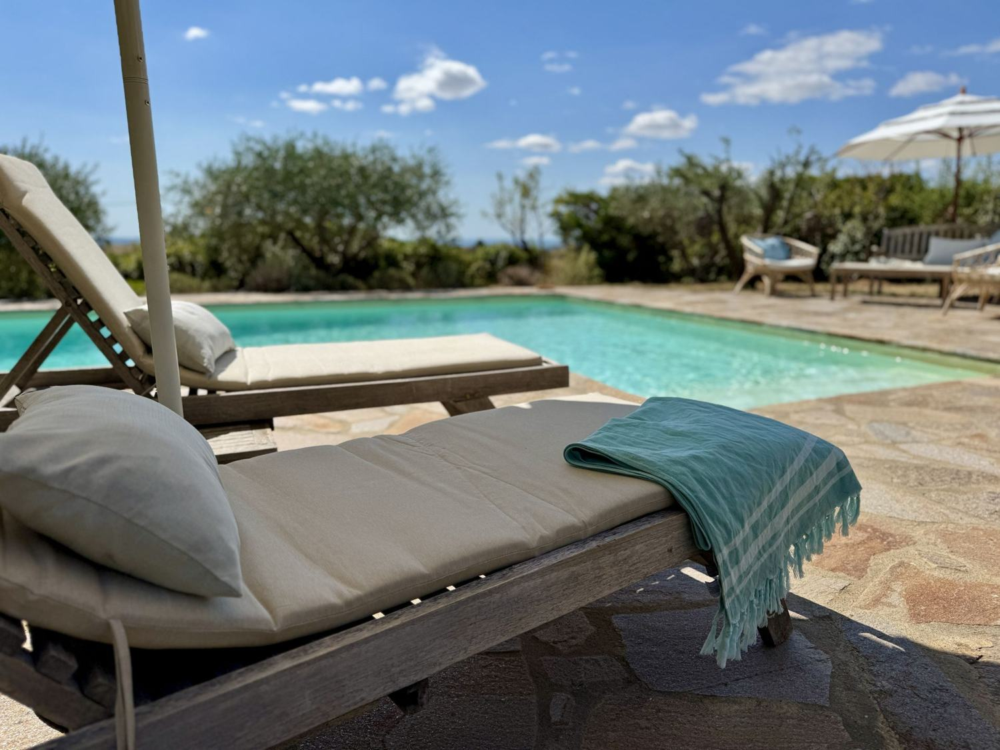
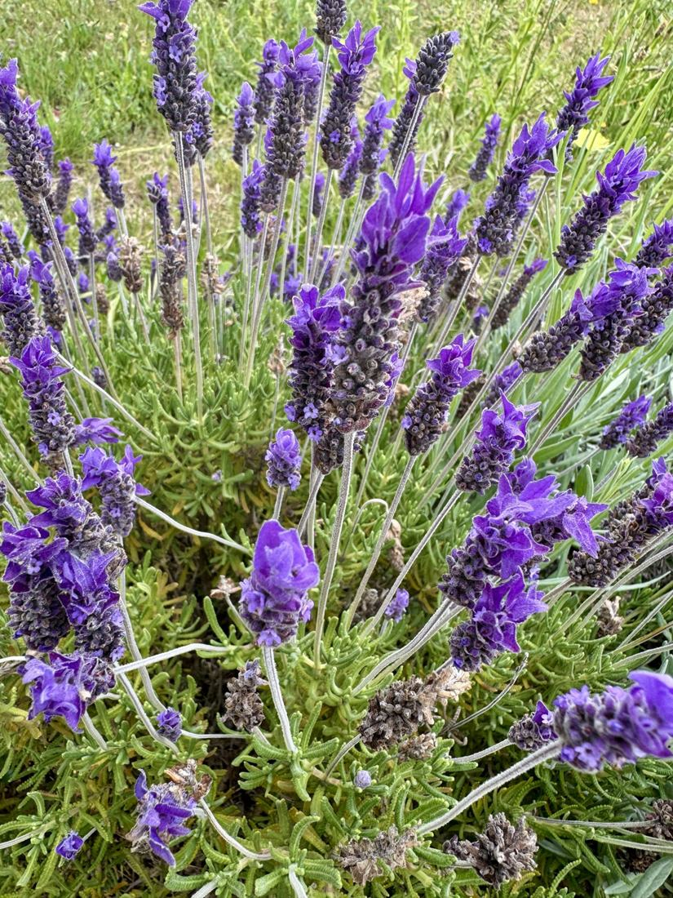
Das Gîte liegt in Caussiniojouls, einem kleinen Dorf nördlich von Béziers, am Rand des Regionalparks Haut-Languedoc. Es steht auf dem Grundstück von Sibylle, die ihre Gäste herzlich empfängt und gern Tipps für die Gegend gibt.
Natursteinmauern, Holzbalken, rote Teppiche und viele Blumen: Hier ist alles mit Liebe zum Detail ausgesucht. Bettwäsche, Handtücher, Strom, Heizung und Endreinigung sind inklusive.
Unten wohnen, kochen und essen, oben zwei große Schlafzimmer unter den Holzbalken. Das Erdgeschoss ist klimatisiert.

Gemütliche Sofas vor der alten Steinwand, dazu ein Beamer mit Filmen für die Abende.
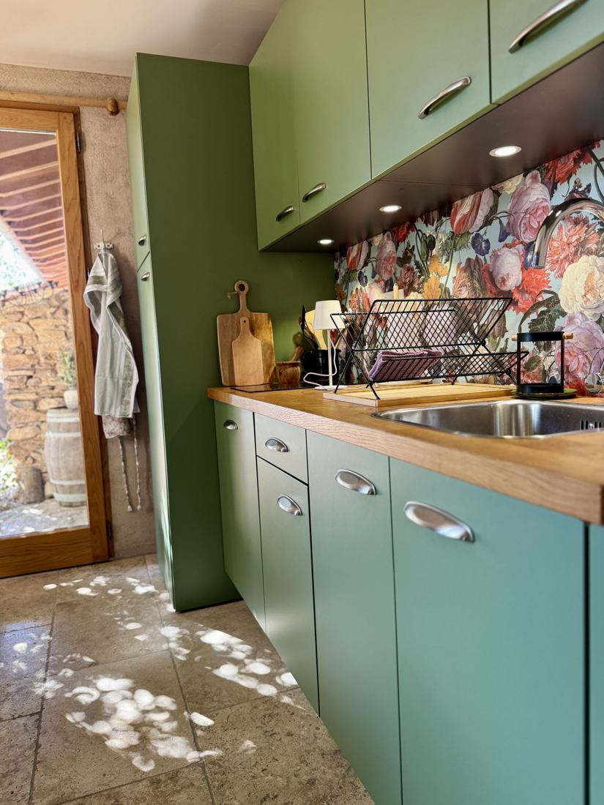
Offene Küche mit Backofen, zwei Kochplatten, Wasserkocher, Toaster und italienischer Kaffeekanne.
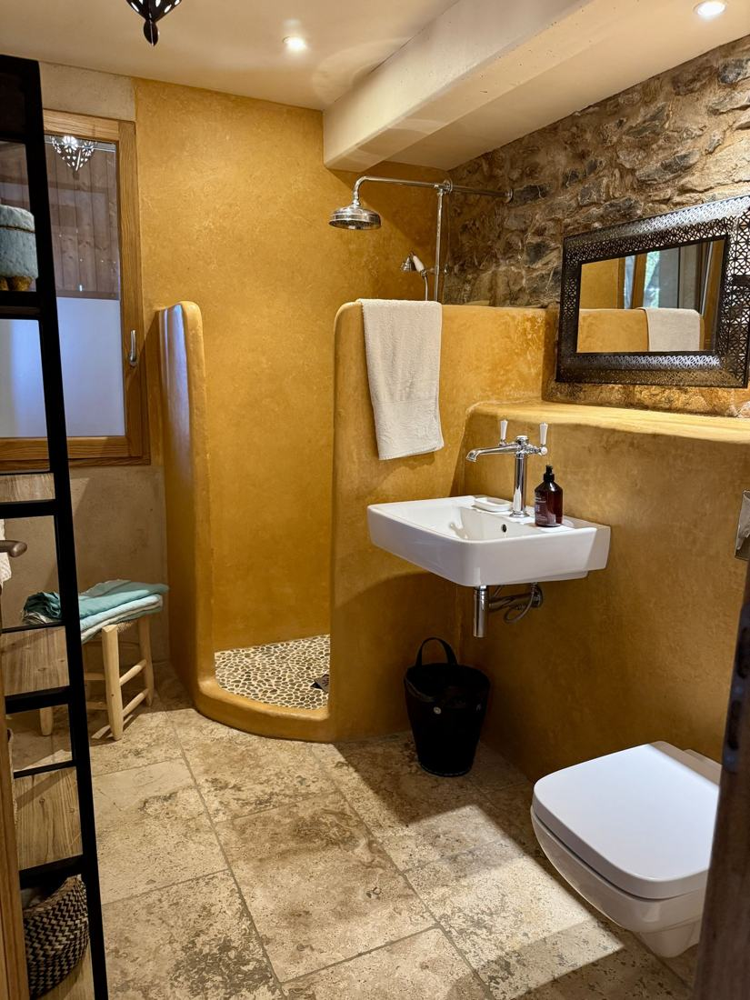
Bad mit offener Dusche, Waschbecken und WC.
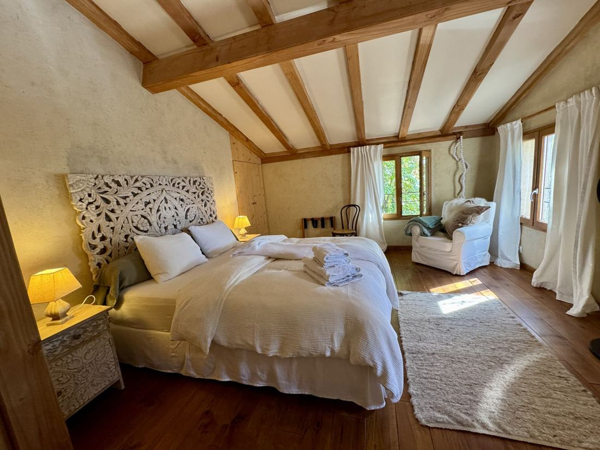
20 m², Doppelbett 160 × 200 cm, mit geschnitztem Kopfteil und Leseecke.
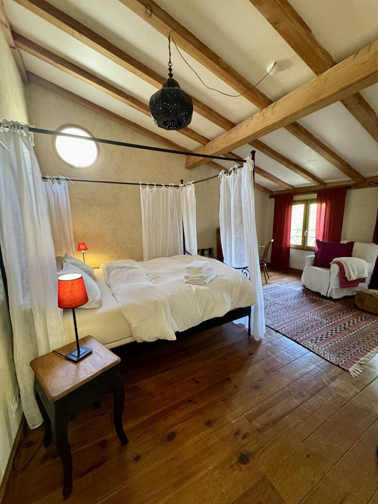
20 m², Himmelbett 180 × 200 cm und ein alter Sekretär.
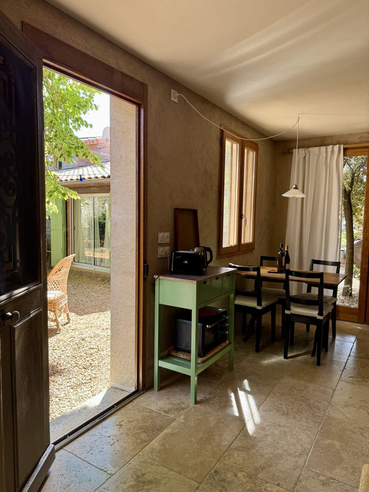
Zwei Zustellbetten, Babybett und Hochstuhl. Frühstück oder Abendessen bei Sibylle gegen Aufpreis.
Ein schattiger Platz unter dem Baum vor dem Haus, eine überdachte Terrasse mit großem Tisch und Grill und ein Pool, den sich die Gäste mit Sibylle teilen.
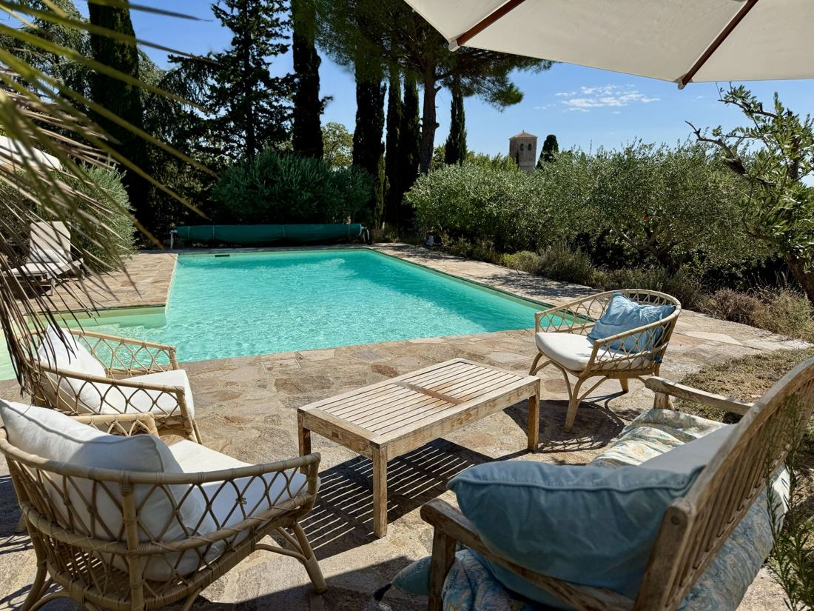
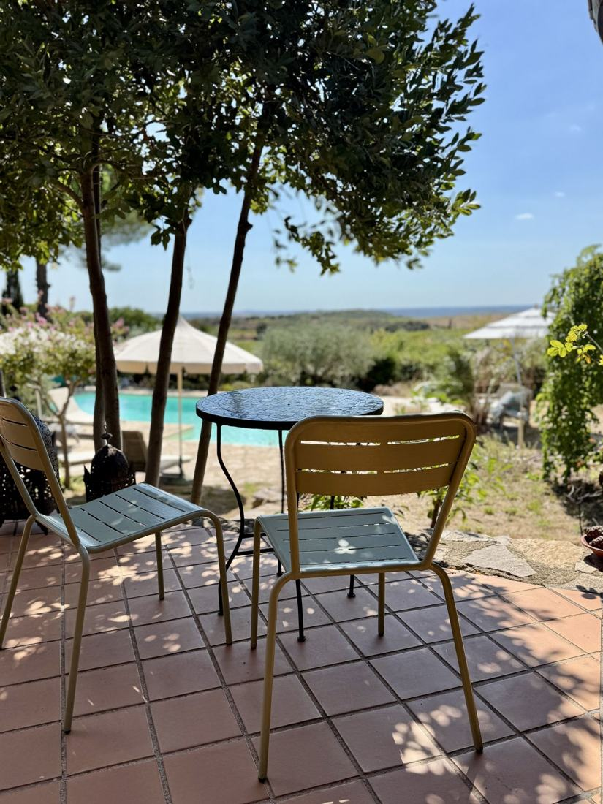
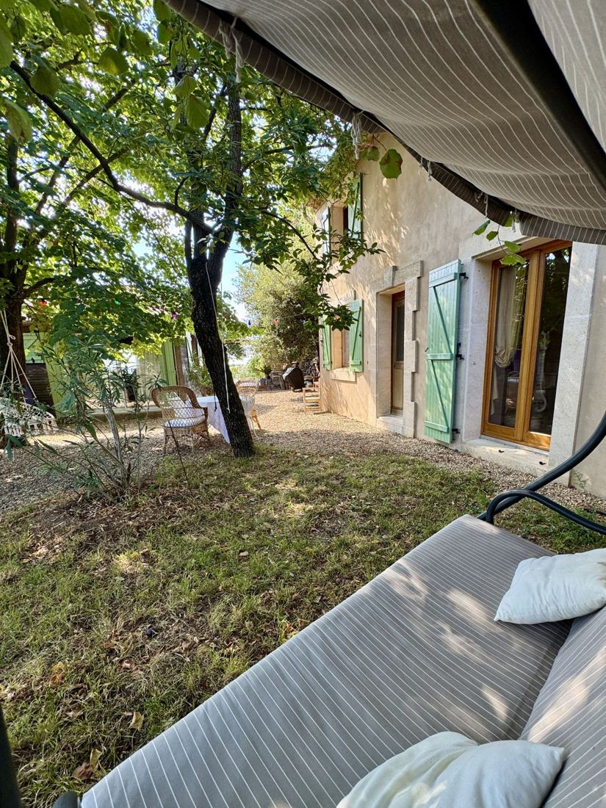
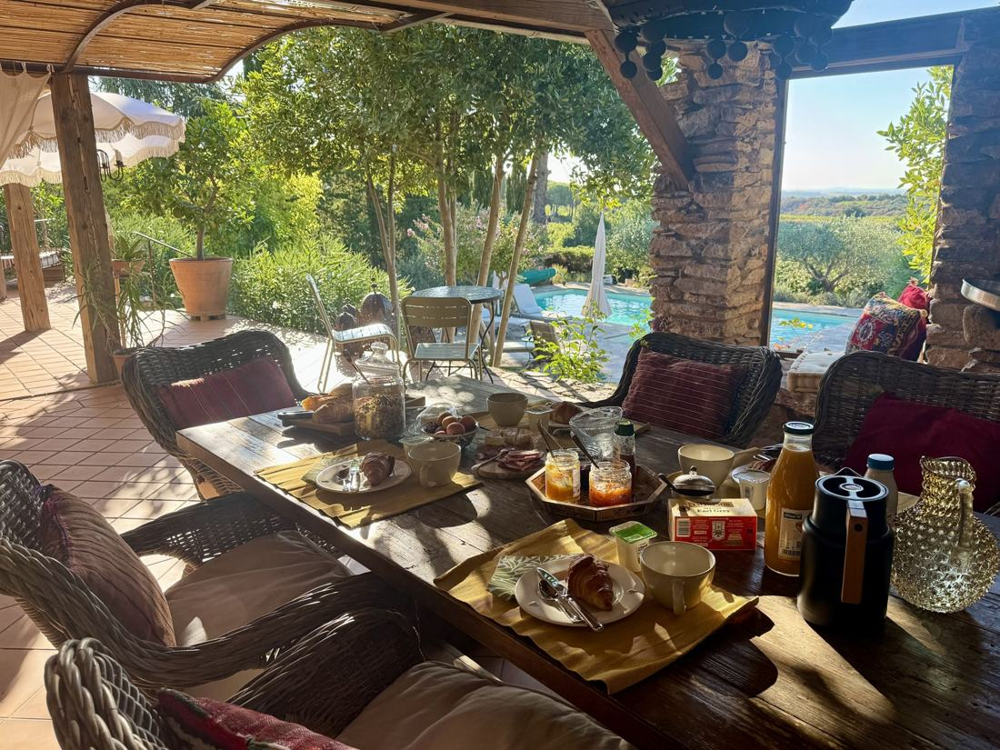
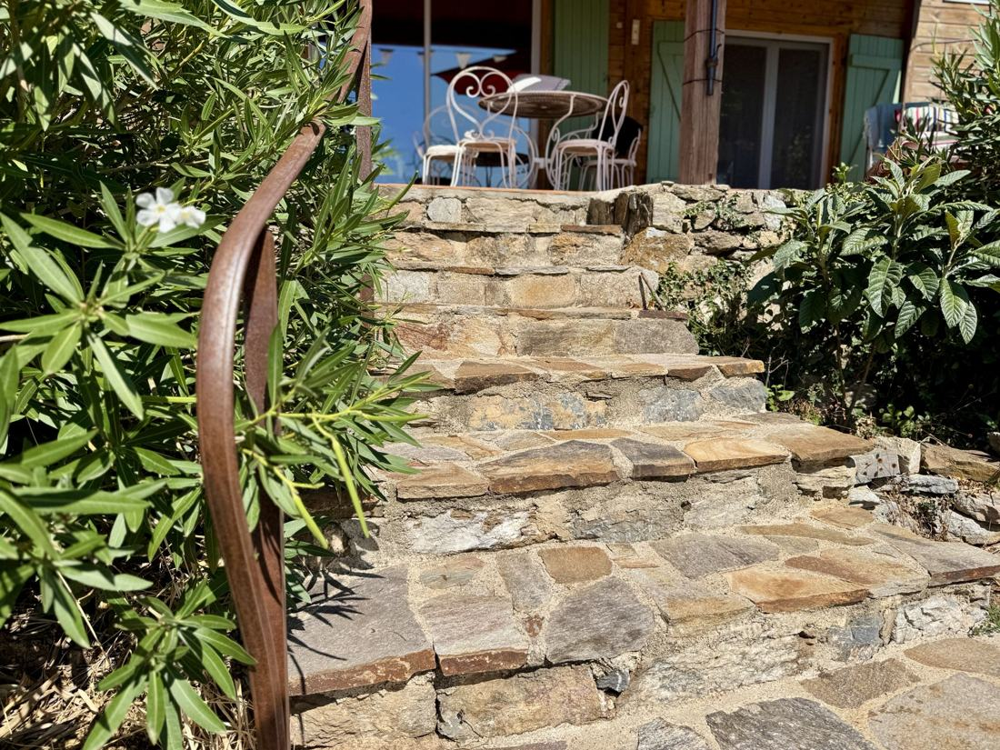
Ein Radweg führt direkt am Haus vorbei. In der Nähe gibt es Badestellen im Fluss, Kletterfelsen, Canyoning und Baumwipfelpfade. Und natürlich die Weine der Region.
Ein wundervoller Aufenthalt in einer traumhaften Oase der Ruhe, geschmackvoll eingerichtet und gepflegt. Wir haben uns vom ersten Moment an wie zu Hause gefühlt.Walid · 09/2026
Sibylle war eine fantastische Gastgeberin, freundlich und hilfsbereit. Das Gîte ist sauber, entspricht ganz der Beschreibung und ist ein wahres Juwel.David · 09/2026
Liebevoll eingerichtet und hervorragend ausgestattet, es fehlt an nichts. Der Blick vom Pool über die Weinberge bis zum Meer: ein Anblick, den wir jeden Tag aufs Neue genossen haben.Regina & Hartmut · 06/2026
Ein Ort zum Entspannen und zum Wiederkommen. Der Garten mit Pool fühlte sich wie eine Erweiterung des Hauses an. Der Abschied fiel uns schwer.Sape · 04/2026
Freie Termine, Preise und die sichere Buchung finden Sie auf der Seite von Gîtes de France.
ab 805 € pro Woche Zu Gîtes de France →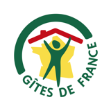
Anerkannt von Gîtes de France · Ref. 34G062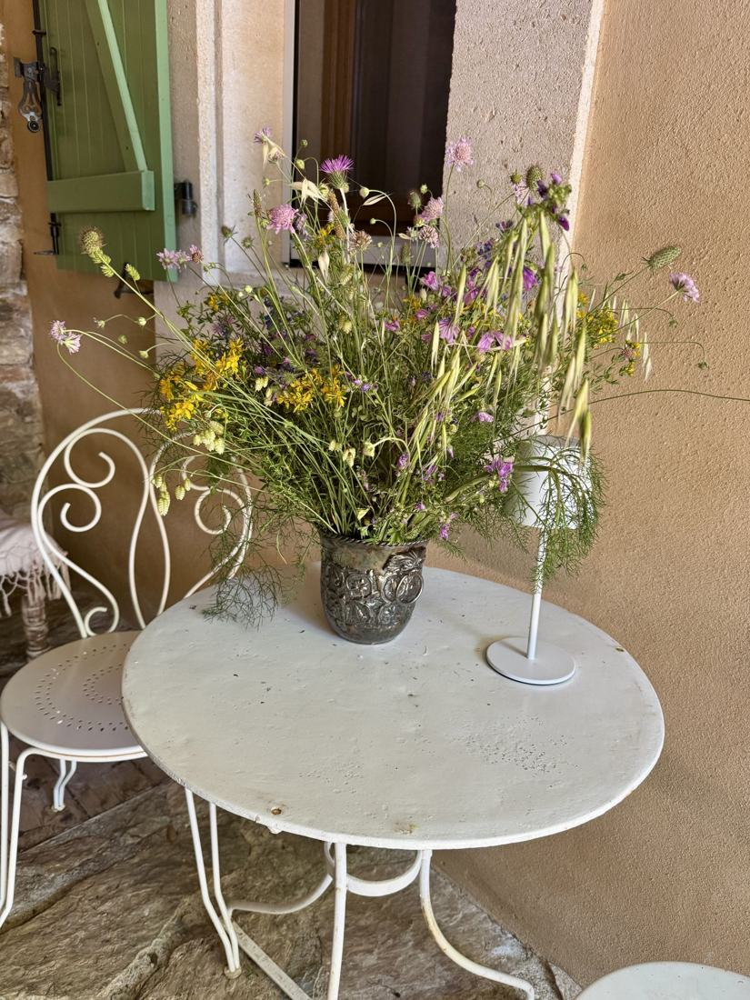
Fragen zum Haus, zur Anreise oder zu Ausflügen? Schreiben Sie mir oder rufen Sie an, ich helfe gern.